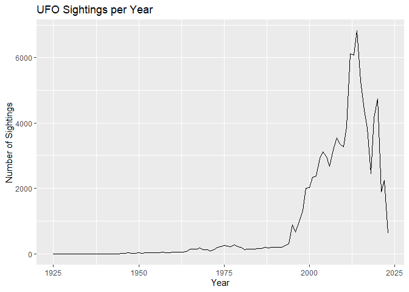

The ufoPackage aims to provide tools for exploring and analyzing UFO sighting data. This package includes a cleaned dataset, a Shiny app for interactive data exploration, and a set of functions designed to facilitate further analysis.
You can install the development version of ufoPackage from GitHub with:
devtools::install_github("ETC5523-2024/assignment-4-packages-and-shiny-apps-rows0001/ufopackage/ufoPackage")
#> Skipping install of 'ufoPackage' from a github remote, the SHA1 (10301e23) has not changed since last install.
#> Use `force = TRUE` to force installationThe package includes a dataset containing UFO sightings, featuring various attributes such as reported date, location, shape, and time of sighting. The data is cleaned and processed to ensure consistency and usability.
This is a basic example which shows you how to solve a common problem:
library(ufoPackage)
## basic example codeLoad the cleaned UFO sightings data:
data("ufo_sightings") # Load the UFO sightings datasetYou can get a summary of the sightings data:
summary(ufo_sightings)
#> reported_date_time reported_date_time_utc
#> Min. :1925-12-28 19:00:00.00 Min. :1925-12-29 00:00:00.00
#> 1st Qu.:2004-10-03 01:11:00.00 1st Qu.:2004-10-03 05:11:00.00
#> Median :2012-02-05 22:22:30.00 Median :2012-02-06 03:22:30.00
#> Mean :2009-04-30 20:31:37.81 Mean :2009-05-01 00:31:37.81
#> 3rd Qu.:2016-01-25 19:18:30.00 3rd Qu.:2016-01-26 00:18:30.00
#> Max. :2023-05-18 15:27:00.00 Max. :2023-05-18 19:27:00.00
#>
#> posted_date city state country_code
#> Min. :1998-03-07 Length:96344 CA :11472 US :88213
#> 1st Qu.:2006-10-30 Class :character FL : 5833 CA : 3514
#> Median :2012-08-19 Mode :character WA : 5055 GB : 1818
#> Mean :2011-09-27 TX : 4170 AU : 602
#> 3rd Qu.:2016-07-15 NY : 3854 IN : 240
#> Max. :2023-05-19 AZ : 3448 MX : 143
#> (Other):62512 (Other): 1814
#> shape reported_duration duration_seconds summary
#> light :18894 Length:96344 Min. :0.000e+00 Length:96344
#> circle : 9361 Class :character 1st Qu.:3.000e+01 Class :character
#> triangle: 8977 Mode :character Median :1.800e+02 Mode :character
#> fireball: 7270 Mean :3.164e+04
#> other : 6482 3rd Qu.:6.000e+02
#> (Other) :43323 Max. :1.987e+09
#> NA's : 2037
#> has_images day_part month
#> Mode :logical night :48505 Length:96344
#> FALSE:96344 afternoon :12564 Class :character
#> astronomical dusk:10391 Mode :character
#> nautical dusk : 7652
#> morning : 7513
#> (Other) : 7171
#> NA's : 2548
#> day_of_week
#> Length:96344
#> Class :character
#> Mode :character
#>
#>
#>
#> To visualize sightings over the years:
# Summarize sightings per year
yearly_sightings <- ufo_sightings %>%
mutate(year = format(as.POSIXct(reported_date_time, format = "%Y-%m-%d %H:%M:%S"), "%Y")) %>%
group_by(year) %>%
summarise(count = n(), .groups = 'drop')
# Plot
ggplot(yearly_sightings, aes(x = as.numeric(year), y = count)) +
geom_line() +
labs(title = "UFO Sightings per Year", x = "Year", y = "Number of Sightings")
This package includes a Shiny app that allows users to interactively explore the UFO sightings dataset. You can launch the app using the following command:
#run_ufo_app() # This function launches the Shiny app